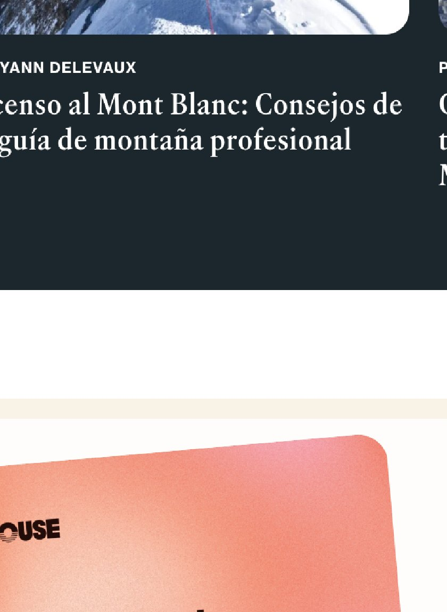
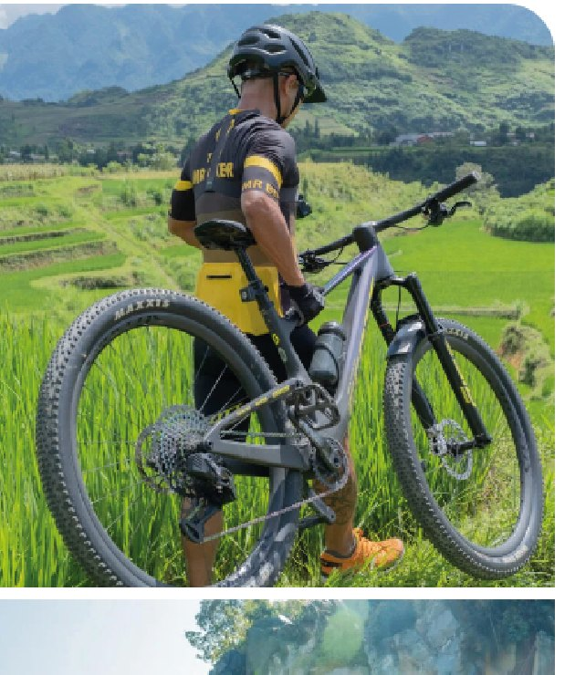
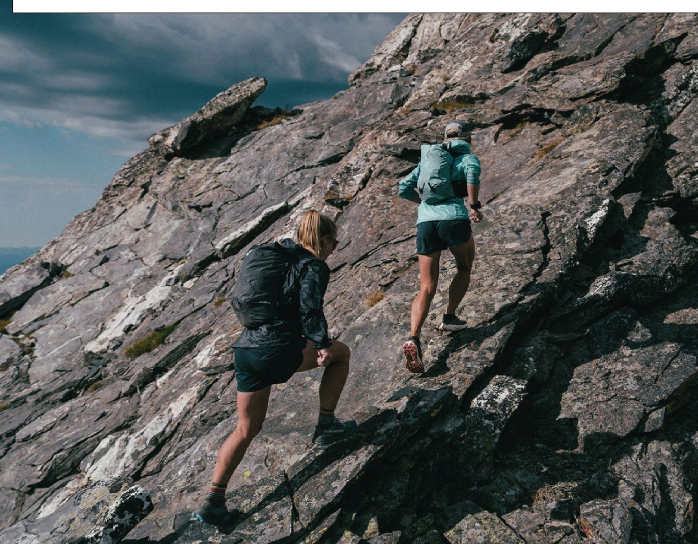
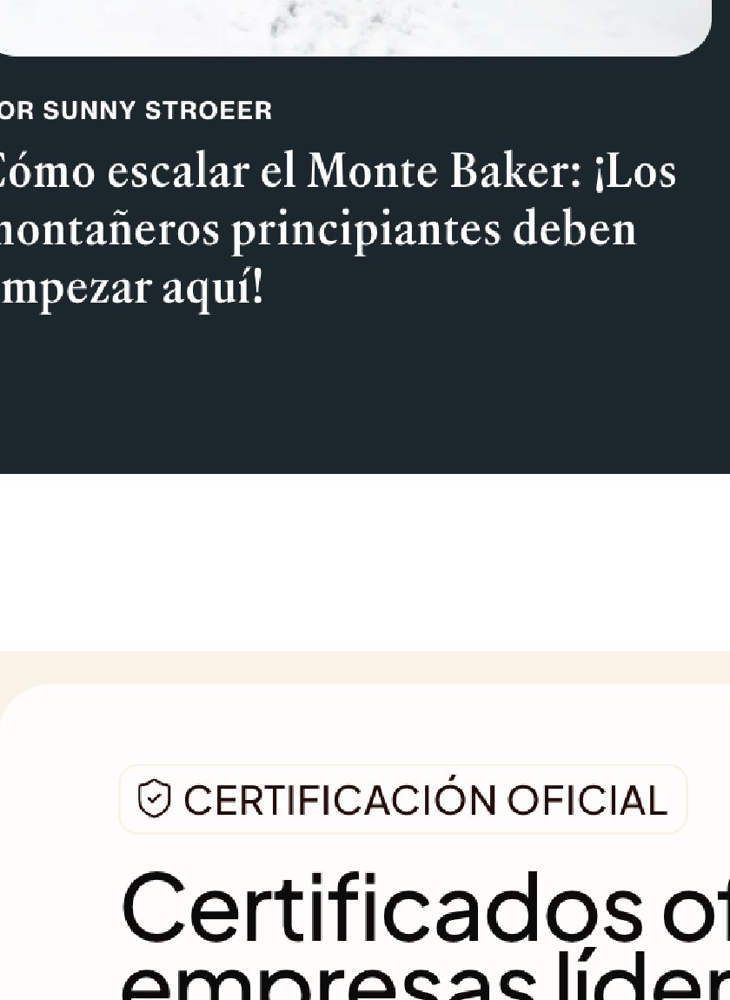
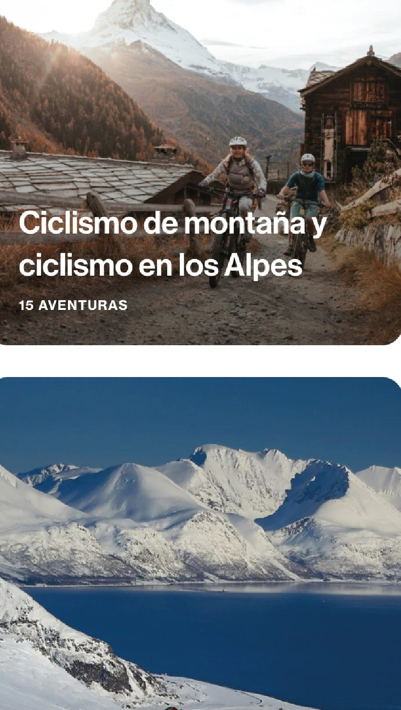
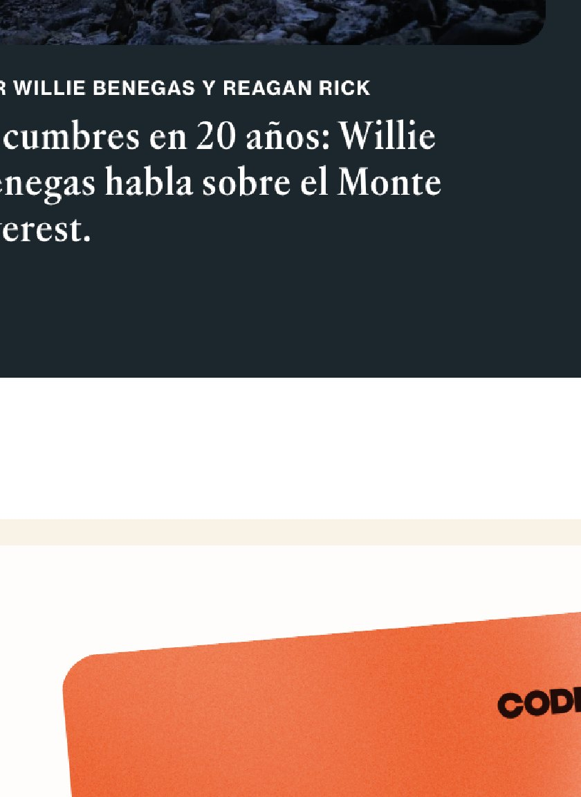
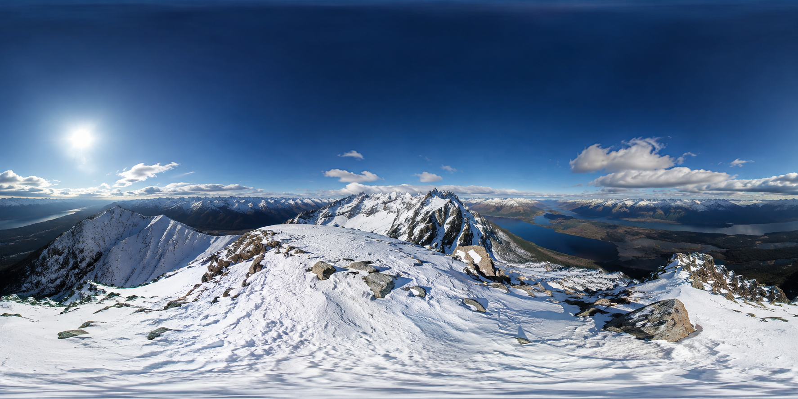

Ascensos guiados
Rutas técnicas con planificación, aclimatación y guía experto.
Alpinismo extremo / Patagonia
Expediciones y formación de alta montaña para personas preparadas física y mentalmente. No vendemos viajes: entrenamos decisiones.
Rutas técnicas con planificación, aclimatación y guía experto.
Prácticas con crampones, piolet, cuerda y rescate básico.
Protocolos para frío intenso, viento blanco y decisiones rápidas.
Capas, botas dobles, casco, arnés y material según objetivo.
Nuestra forma de subir
Cúspides prepara a cada participante durante meses: condición física, lectura de terreno, criterio técnico y adaptación mental para entornos donde improvisar no es una opción.
Diseñamos experiencias que filtran por compromiso. Si buscás postal fácil, no es acá. Si buscás transformarte, empezá.



Expediciones destacadas
Campo de Hielo Sur
Ruta glaciar avanzadaOrientación, cuerda y gestión de grietas en una travesía exigente.Ver más


Expediciones
3.128 m
6.962 m
Ruta glaciar
3.776 m
3.405 m
Galería de fotos
Sistema Cúspides
Un recorrido técnico y progresivo: preparación física, práctica en hielo, lectura del clima y decisión final de ascenso.
Guías verificados
Guía UIAGM · rescate glaciar
Preparador físico · altura

Nutrición deportiva · frío extremo
Logística y seguridad alpina
Medicina agreste · aclimatación
Testimonios
★★★★★
Una de las mejores experiencias al aire libre que viví. La vista superó cualquier expectativa.
Leer más★★★★★
Excelente planificación, tiempos claros y muy buena orientación técnica. Se priorizó la seguridad.
Leer más★★★★★
La aventura fue increíble, con formación útil y paisajes que no se olvidan.
Leer más★★★★★
La preparación previa marcó la diferencia. El equipo fue serio, humano y atento.
Leer más★★★★★
Sentí aventura extrema, pero nunca improvisación. Todo estaba pensado con respeto.
Leer más★★★★★
Una de las mejores experiencias al aire libre que viví. La vista superó cualquier expectativa.
Leer más★★★★★
Excelente planificación, tiempos claros y muy buena orientación técnica. Se priorizó la seguridad.
Leer más★★★★★
La aventura fue increíble, con formación útil y paisajes que no se olvidan.
Leer más★★★★★
La preparación previa marcó la diferencia. El equipo fue serio, humano y atento.
Leer más★★★★★
Sentí aventura extrema, pero nunca improvisación. Todo estaba pensado con respeto.
Leer másTerreno interactivo
Arrastrá la imagen para explorar un panorama de alta montaña: aristas, glaciares, pasos expuestos y puntos de decisión.

Artículos
Entrenamiento, equipo y criterio.
Seguridad como decisión técnica.
Capas, cuerda y material técnico.
Señales, cuerda y progresión.
Partners técnicos
Escuela 2027
Programas de formación, rescate en grietas, primeros auxilios agrestes y progresión glaciar. Un espacio para quienes quieren convertirse en montañistas técnicos.
Contacto
Contanos tu experiencia, objetivo y fechas tentativas. Te respondemos con una recomendación clara para avanzar.